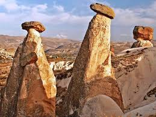
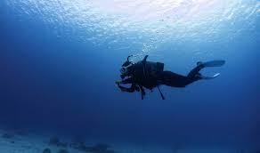
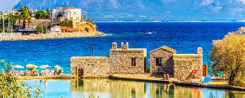
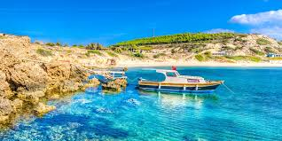
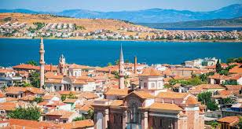
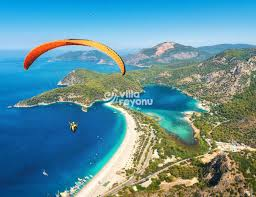
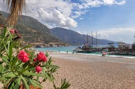
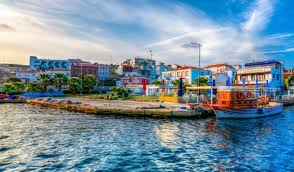
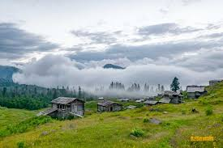
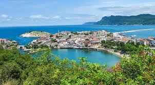

1. Kapadokya
Peri bacalarıyla ünlü.

2. Kaş
Dalış cenneti.

3. Datça
Sakinlik arayanlara özel.

4. Bozcaada
ada atmosferi.

5. Ayvalık
Tarihi taş evler ve deniz.

6. Fethiye
Ölüdeniz plajıyla bilinir.

7. Safranbolu
UNESCO mirası evleri.

8. Gökçeada
Doğa ile iç içe bir tatil.

9. Artvin
Yayla turizminin merkezi.

10. Amasra
Karadeniz’in gözdesi.

11. Karavan kamp alanı önerileri
12. Su ve elektrik planlaması
13. Doğada çöp bırakmama bilinci
14. Güneş paneli kullanımı
15. Güvenli park yerleri
16. Karavan sigortası
17. Kamp mutfağı ekipmanları
18. Yaz & kış lastiği farkı
19. Mobil uygulama önerileri
20. GPS ve harita kullanımı
21. İl il hava durumu takibi
22. Kamp malzemeleri listesi
23. Çamaşır yıkama ipuçları
24. Karavan kiralama mı satın alma mı?
25. Hayvan dostu bölgeler
26. Gıda stoklama yöntemleri
27. Elektrik dönüştürücüler
28. Arızalarda neler yapılmalı?
29. Yasal park kuralları
30. Doğada hayatta kalma becerileri
💡 Dikkat Edilmesi Gereken 30 Nokta
Güvenlik kameraları,
kuru gıda stoğu,
fener ve yedek pil,
harici batarya,
acil durum numaraları,
yangın söndürücü,
tente,
ilk yardım kiti,
çakmak,
eldiven,
yağmurluk,
harita,
kar zinciri,
çantada bozuk para,
doğaya zarar vermeme,
güneş kremi,
ekstra anahtar,
güneşlik perde,
su arıtıcı,
katlanabilir masa,
tabure,
kahve ekipmanı,
çöp torbası,
elden geçirilecek rota,
gaz kaçağı dedektörü,
cep feneri,
çok amaçlı çakı,
karavan ruhsatı,
parlak yelek,
akıllı telefon uygulamaları